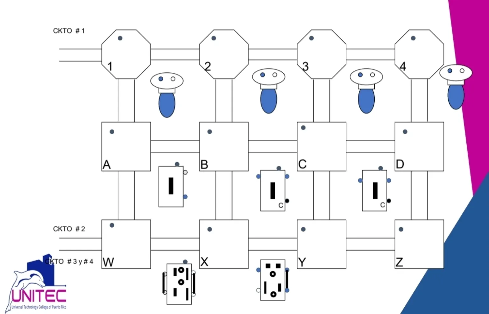

Simulador de circuitos
Abrir Circuito Lab para cablear el tablero y medir tensión/voltaje
Práctica de recorridos entre cajas
Practica con el tablero de UNITEC. Selecciona las cajas en orden para trazar el recorrido del control hasta la lámpara. Cada paso debe seguir una canalización del diagrama.
El interruptor virtual controla la lámpara al completar el recorrido. El ejercicio representa la ruta entre cajas y omite las conexiones individuales de los conductores.
